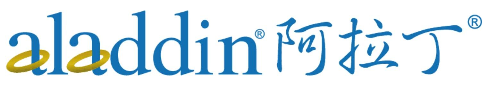
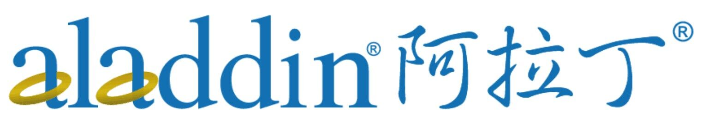

Challenges
Firstly, the natural degradation rate of PBAT is extremely slow. After three months of natural degradation, it can only be degraded by about 2.3%. Secondly, the PBAT decomposition rates of existing PBAT-degrading enzymes in room temperature are generally low, restricting its utilization in the context of agricultural practices. Additionally, PBAT hydrolysis products can be toxic, adversely affecting microbial metabolism and efficient substrate assimilation.
Solution
We identified three distinct enzyme candidates for targeted evolutionary engineering, with the objective of developing highly efficient PBAT hydrolases that exhibit optimal catalytic activity under room temperature conditions. Furthermore, we also aim to obtain an engineering Pseudomonas putida
KT2440 strain capable of catabolizing of PBAT-derived degradation products.
 
